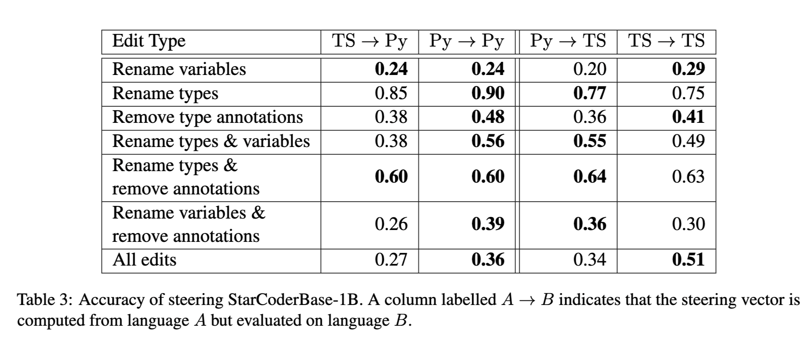

Steering
November 24, 2024 • Alex Loftus, Rohit Gandikota, Dmitrii Troitskii
We now examine the emergence of activation steering as a method for controlling large language models. This technique has developed rapidly over the past year, with three key papers establishing its theoretical foundations and practical applications.
Our examination focuses on how activation steering evolved from initial insights about model representations to a practical technique for controlling model behavior. We trace this development through three papers that build on each other, each making distinct contributions to our understanding of how to manipulate transformer internal states.
The first paper, "Understanding How CodeLLMs (Mis)Predict Types" by Lucchetti and Guha, demonstrates the potential of activation steering through its application to type prediction in code models. The second, "Inference-Time Intervention" by Li et al., formalizes steering techniques and shows their effectiveness for enhancing model truthfulness. The third paper, "Representation Surgery" by Singh et al., provides theoretical foundations by characterizing optimal steering functions and establishing formal guarantees.
Understanding How CodeLLMs (Mis)Predict Types
This paper was published by Francesca Luchetti and Arjun Guha, both at Northeastern University. Francesca is a PhD student in Arjun's lab, and Arjun is a professor. Their group focuses on coding LLMs.
Lucchetti and Guha investigate type prediction in code language models, focusing on Python and TypeScript. They investigate what happens when a model mispredicts a type, which models can be made to do by applying semantics-preserving edits to code.
 Starting with a correct type prediction, we can apply semantics-preserving edits to the prompt until the type prediction fails. By using activation steering, the authors are able to steer the model back to the correct prediction - making models more robust against semantically irrelevant prompt features. Interestingly, steering vectors computed from Python code are effective at correcting TypeScript mispredictions, and vice-versa.
Their key insight is that models often contain robust mechanisms for tasks that can be accessed through activation steering, even when surface behavior suggests otherwise.
Starting with a correct type prediction, we can apply semantics-preserving edits to the prompt until the type prediction fails. By using activation steering, the authors are able to steer the model back to the correct prediction - making models more robust against semantically irrelevant prompt features. Interestingly, steering vectors computed from Python code are effective at correcting TypeScript mispredictions, and vice-versa.
Their key insight is that models often contain robust mechanisms for tasks that can be accessed through activation steering, even when surface behavior suggests otherwise.
Methodology They built steering datasets for the 1B and 7B parameter StarCoderBase models, both of which are trained to fill-in-the-middle. The dataset is pulled from github rather than using prompt templates; ManyTypes4Py was used for Python type prediction, which features code from 5,382 Python projects that use type annotation. They collect triplets \( (x+, x-, t) \), where t is the type of the prompt x+, and x- is a semantically-equivalent prompt that is misclassified. x- is obtained by renaming the variable, removing the type annotation, renaming a user-defined type, and renaming a builtin type.
They then take these steering triplets, apply forward pases to both the positive and negative sample, and save residual stream activations on the last token. They find which layers are most effective for steering using a layer ablation method, evaluate the accuracy of steering on different datasets, and explore patching both on single layers and sets of adjacent layers.

Once they determine which layers are most effective for steering, they apply it and report results in both python and typescript. It works well pretty much across the board compared to steering with a random vector.

An interesting finding is that steering vectors computed from one programming language transfer effectively to another - suggesting models learn fundamental, language-agnostic representations of programming concepts. 
Inference-Time Intervention

Li et al. develop a systematic framework for steering model behavior by identifying and manipulating "truth-correlated" directions in activation space. Their work introduces key techniques that have become standard in activation steering:
- Using linear probing to identify relevant attention heads
- Computing steering vectors that capture desired transformations
- Applying targeted interventions during inference
A crucial innovation in their work is focusing interventions on specific attention heads rather than the full residual stream. This allows for more precise control while minimizing disruption to other model capabilities.
Representation Surgery
Singh et al. provide theoretical foundations for activation steering by characterizing optimal steering functions under different constraints. They prove that in many cases, minimal intervention can be achieved through simple affine transformations of activations.
Their work establishes formal guarantees about the effects of steering and introduces methods for balancing competing objectives like maintaining model capabilities while steering behavior. The paper also provides practical guidance about where in a network to apply steering interventions for maximum effect with minimal disruption.
Discussion Questions
- How do the theoretical guarantees from Representation Surgery relate to the empirical findings about language transfer in the CodeLLM paper?
- What are the tradeoffs between targeting specific attention heads versus intervening in the full residual stream?
- How might these techniques generalize beyond code and truthfulness to other aspects of model behavior?
- What are the limitations of current steering methods and what theoretical advances might help overcome them?